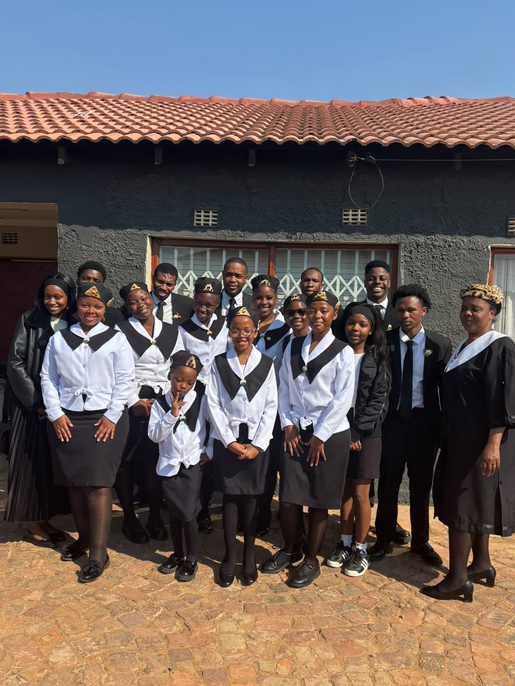
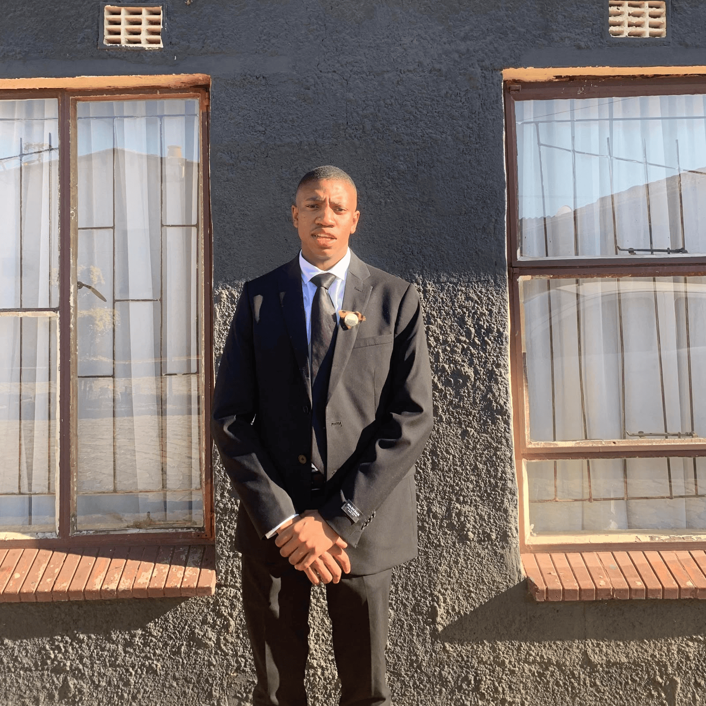
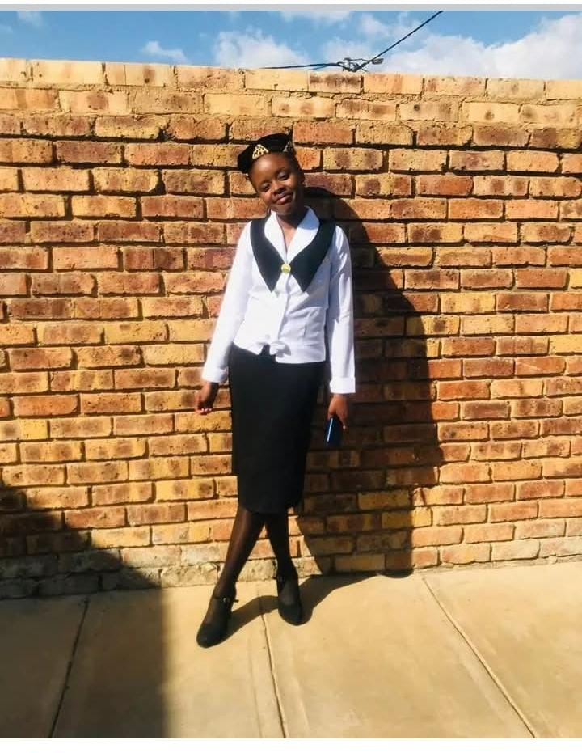
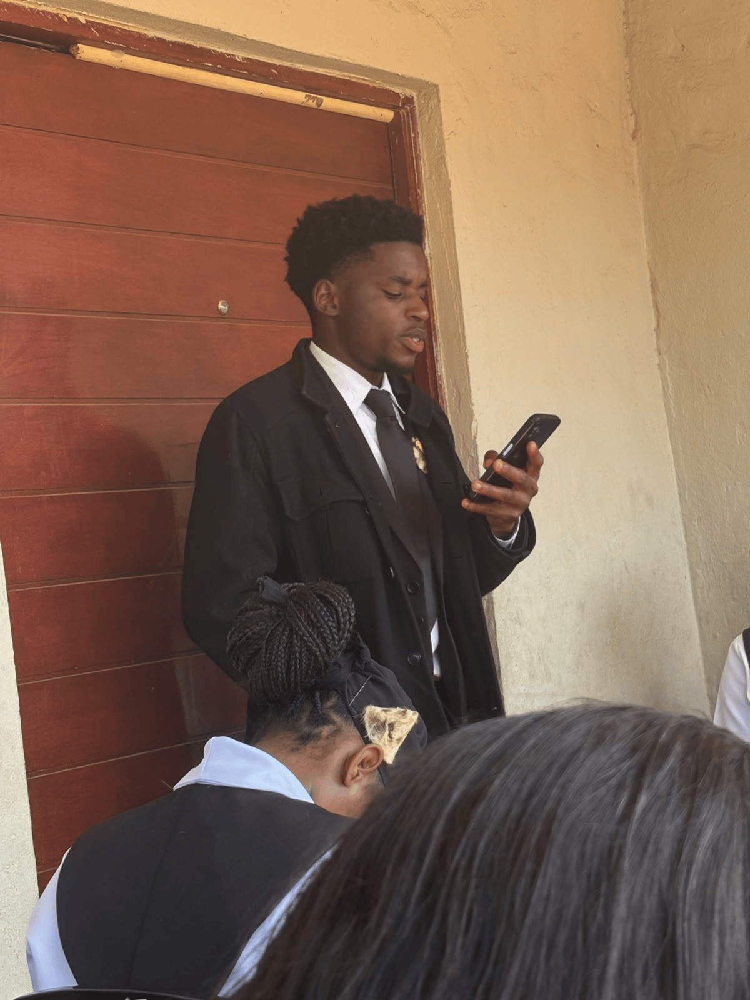
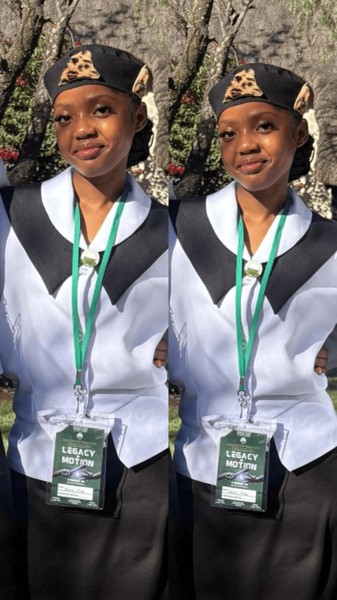
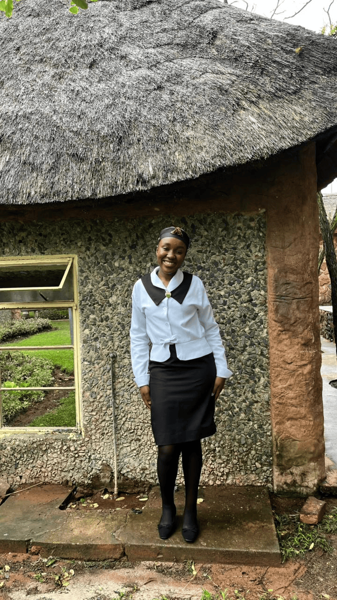
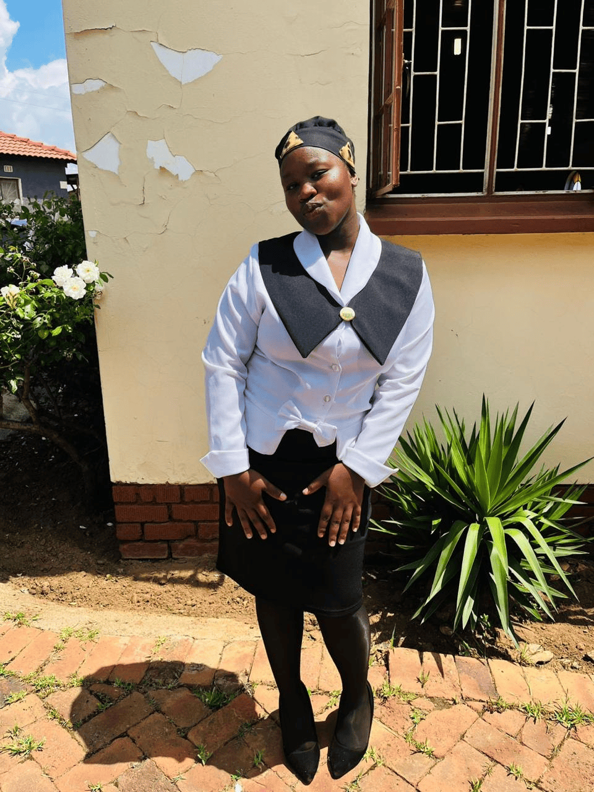
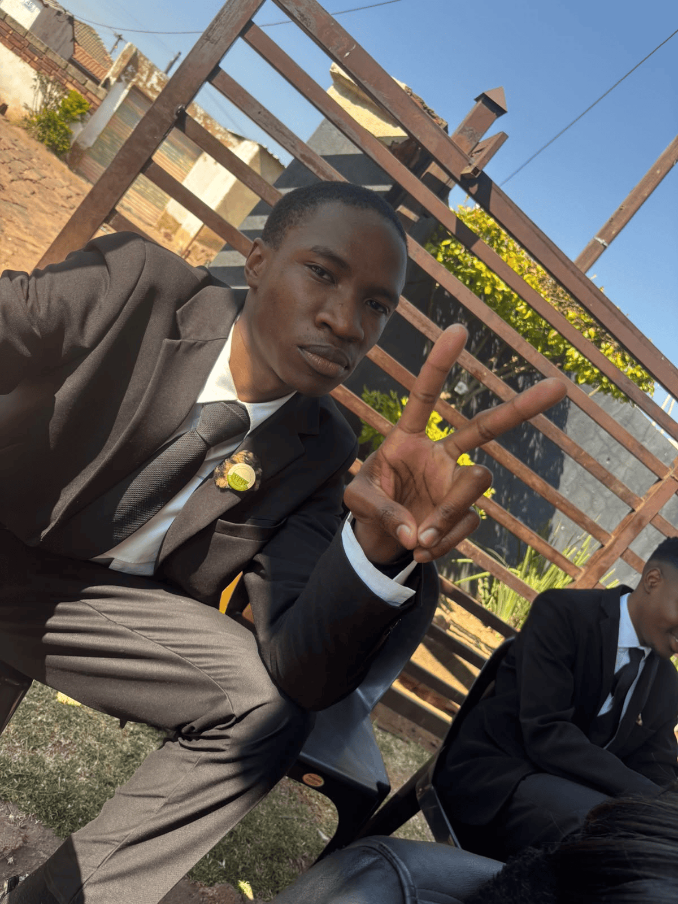
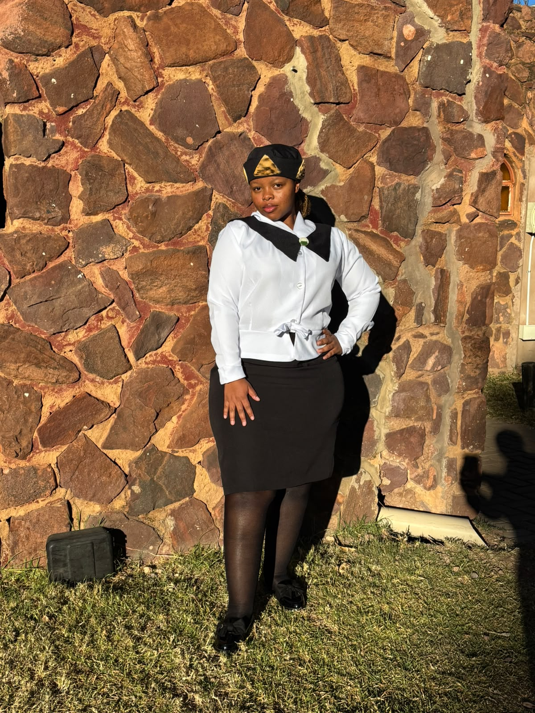

About Darie Mae Robinson YPD
Young in faith, Strong in purpose

⛪ Who Are We?
DMR YPD is a youth ministry dedicated to empowering young people to Grow,Glow and Go for Christ. As part of the Young People's and Children's Division(YPD) of the Women's Missionary Society of the African Methodist Episcopal(AME) Church,we create a space where young people can grow in their faith,discover their purpose, develop leadership skills and make a positive difference in the Saulsville/Atteridgevlle Community.
⛪Our History:
The YPD has a long history within the AME Church. The AME Church was formally established in 1816 under the leadership of Richard Allen, and it grew into a global church with a strong commitment to faith,education,leadership and service. The YPD was formally adopted within the missonary work of the AME Church in the early 20th century, developing programmes that gave young people opportunities to learn,serve,lead and become more involved in church life. Its purpose continues to include youth training, Christian Education, Leadership development and mission work. Today, DMR YPD carries that legacy forward by creating opportunities for young people to connect,worship,learn,serve and grow together. We believe that young people are not just the future church - We are an important part of the church today.
⛪Our mission:
To foster a personal relationship with Jesus Christ among young people, Discipleship and spiritual growth,Leadership development for service in the church and community,Facilitate the missions'efforts of the Womens Missonary Society as well as promote education, honest and compassionate service.
⛪Our Mission Statement:
As a unified body with Christlike qualities, we will build a connectional bond that demonstrates pride through education,communication and mission work.
⛪Our Vision:
Strongly founded on scriptures, Dedicated to ministering to the Christian Faith, Competent to lead within the society and the church and Dedicated to community development,missions, and evangelism.
⛪Our Motto:
"Grow, Glow and Go for Christ!"
📢Our Leadership Team
Meet the team that guides and serves the Darie Mae Robinson YPD:

Sis. Talifhani Malungwana YPD President |
|
 Bro. Thato Kgatiso YPD First Vice President |
|
 Sis. Phenduliwe Sizane YPD Second Vice President |
|
 Bro. Ntsakiso Hlongwane YPD Third Vice President |

Sis. Matimba Mathaba YPD Recording Secretary |

Sis. Tshiamiso Mashiane YPD Assistant Recording Secretary |
|
 Sis. Onalerona Mokae YPD financial Secretary |

Sis. Oresiametse Mokae YPD Correspondence Secretary |
|
 Sis. Ntebeng Senosha YPD Parliamentarian |
|
 Sis. Tiisetso Mokgoko YPD Historiographer/Statiscian |
|
 Bro. Mbelengwa Ndhlehla YPD Worship Director |
|
 Sis Jessie Begwa YPD Associate Editor |